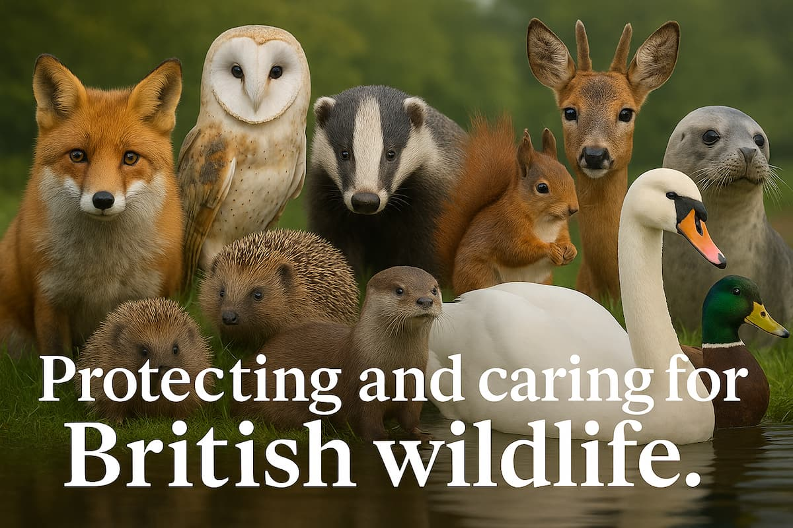
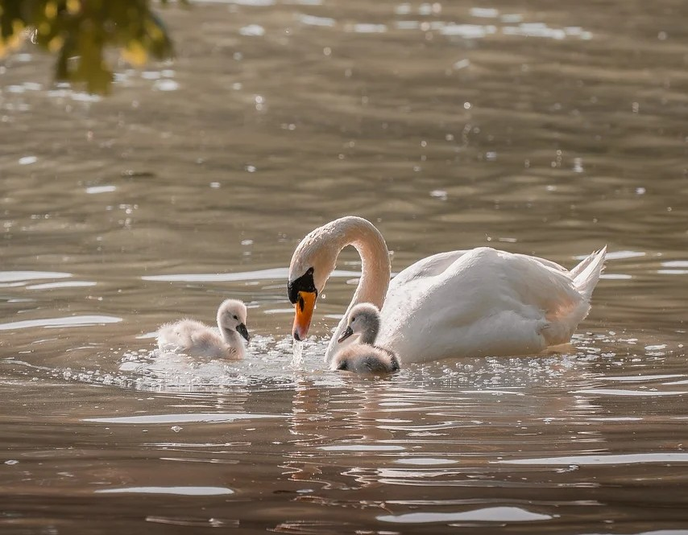
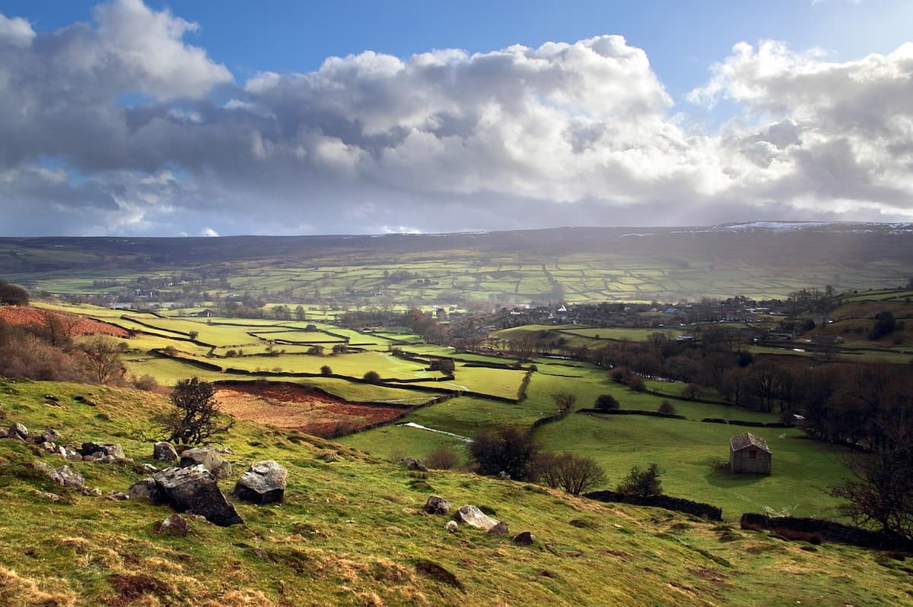
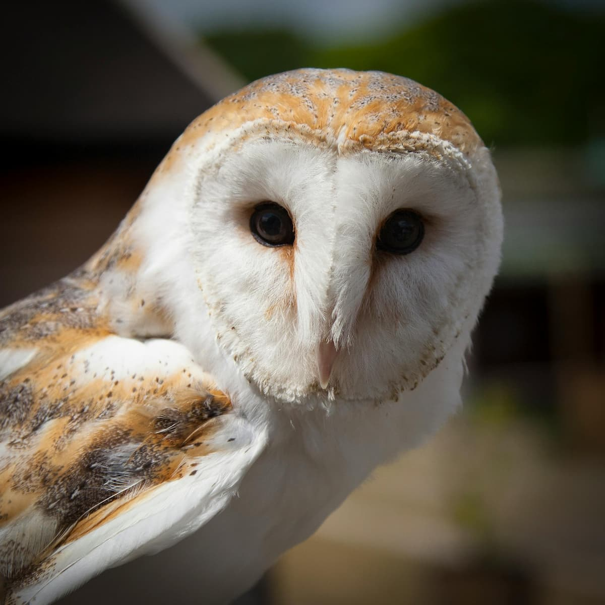
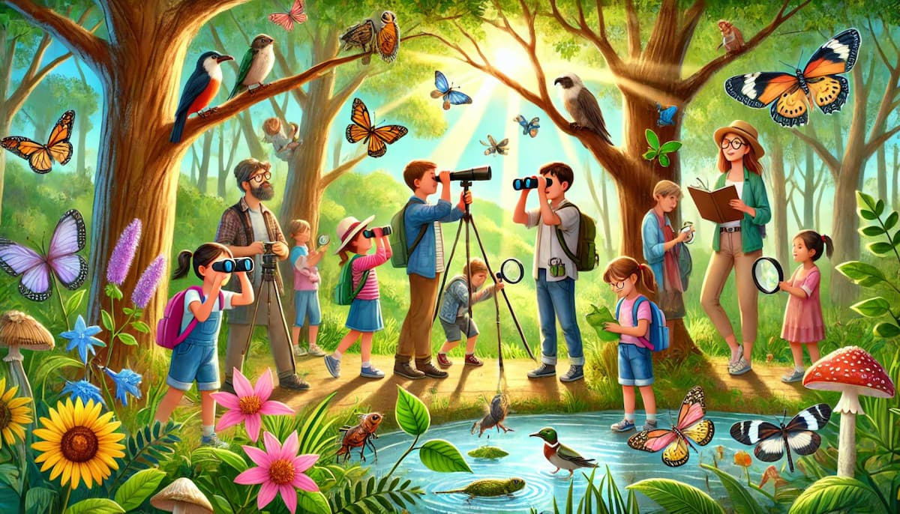

Our Mission
Jacob Wildlife Centre is dedicated to rescuing sick, injured, and orphaned wildlife across the UK. Our team works every day to rehabilitate animals and give them the best chance of returning safely to their natural habitats. For wildlife that cannot survive independently, we provide lifelong sanctuary and compassionate care. We aim to protect animals, restore habitats, and inspire the community to value and preserve British wildlife.

Every rescued animal goes through a careful rehabilitation process designed to help it recover safely and return to the wild. Our specialists provide medical treatment, monitor progress, and guide animals through natural behaviours like foraging and social interaction. This structured care gives each animal the best possible chance of surviving independently once released back into its natural habitat.

Protecting natural habitats across the UK is essential for long-term wildlife survival. Our conservation efforts focus on restoring woodlands, meadows, wetlands, and hedgerows to support biodiversity and create thriving ecosystems for British wildlife.

Many animals arrive at the centre suffering from injury, illness, or displacement. Through specialised care and rehabilitation, we prepare them for release whenever possible, and provide permanent sanctuary for animals unable to survive in the wild.
Kids Wildlife Corner
Fun wildlife tips specially designed for children. Learn how to help animals safely while discovering the beauty of nature. Our Kids Corner is full of simple guides, activities, and wildlife facts to inspire young animal lovers.

Explore Kids Tips →